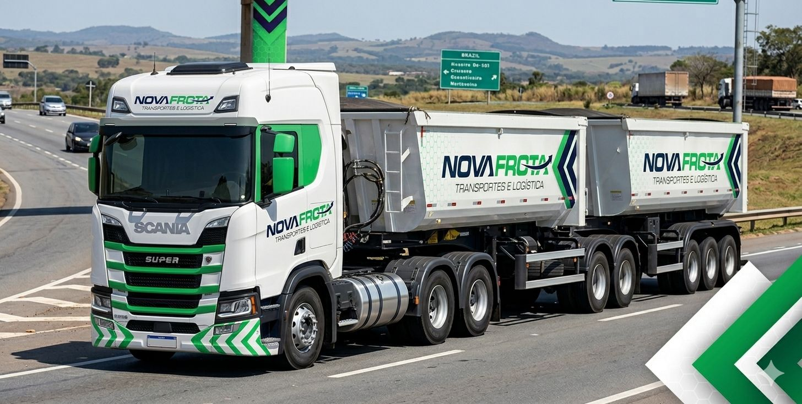

01 / 05
Grãos e derivados
Transporte de soja, milho, sorgo e outros produtos do agronegócio.
Conhecer soluçãoDa origem ao destino, conectamos cargas, rotas e oportunidades. Transporte rodoviário para o agronegócio com organização, segurança e atendimento próximo.

Atendemos demandas do campo à indústria, com planejamento e acompanhamento operacional.
Transporte de soja, milho, sorgo e outros produtos do agronegócio.
Conhecer soluçãoOperações de transporte de insumos com atenção às etapas e aos requisitos de cada carga.
Conhecer soluçãoPlanejamento e cuidado no transporte de cargas agrícolas, conforme os requisitos aplicáveis.
Conhecer soluçãoProgramação e controle para manter o fluxo logístico da produção ao destino.
Conhecer soluçãoSoluções para diferentes necessidades de transporte industrial e regional.
Conhecer soluçãoUnimos estrutura, parceiros estratégicos e atendimento regional para oferecer uma operação mais organizada, previsível e próxima do cliente.
Contato regional para entender cada necessidade logística.
Coordenação de cargas, rotas e disponibilidade de transporte.
Integração entre frota, agregados e oportunidades no campo.
Atendimento regionalizado e cobertura de importantes estados produtores e corredores logísticos.
Ver regiões e contatosUma jornada simples de atendimento, planejamento e acompanhamento.
Você informa a demanda e os detalhes da carga.
Nossa equipe avalia opções de frota e operação.
Coordenamos a movimentação conforme o combinado.
Seguimos próximos até a conclusão da entrega.
Motoristas e transportadores encontram no Grupo Vale do Araguaia um caminho para novas conexões e oportunidades.
Quero ser agregadoEmpresas presentes na nossa rede de relacionamentos logísticos.


Converse com nossa equipe e encontre o atendimento da sua região.